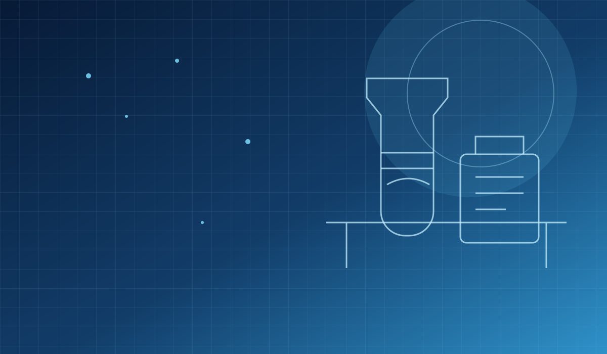

Recommendations are anchored to requirements, documented rationale, traceability and reviewable records.
ABOUT VALISTERA
Technical depth. Practical clarity.
ValiStera Solutions supports pharmaceutical teams with structured, risk-based quality and regulatory services designed around reliable evidence and practical execution.

Quality by design · Evidence by practice
OUR PURPOSE
Make complex quality requirements work in practice.
Pharmaceutical quality work sits at the intersection of science, engineering, documentation and regulation. Requirements can be complex; the evidence needed to demonstrate control should be organised, traceable and understandable.
ValiStera brings a connected view of qualification and validation, GMP compliance, sterile manufacturing, inspection readiness, regulatory documentation and digital quality. Our focus is to help teams turn requirements into clear deliverables, identify gaps early and strengthen the evidence that supports decisions.
Engagements are scoped to the client's needs, with a focus on transparent deliverables, collaborative working and appropriate escalation where specialist review or client approval is required.
OUR PRINCIPLES
How we approach the work.
Effort should reflect product, process, patient and data risks—not templates alone.
Clear scope, roles, deliverables and actions help teams make progress without unnecessary complexity.
Quality does not end at approval; change, periodic review, requalification and continual improvement matter.
OUR SERVICE MODELFlexible support.
Flexible support.
Clear boundaries.
Remote collaboration allows us to support document reviews, readiness planning, gap assessments and structured quality work across geographies. Any regulated deliverable remains subject to agreed scope, client governance and qualified review/approval.
Discuss an engagement ↗VALISTERA SOLUTIONS